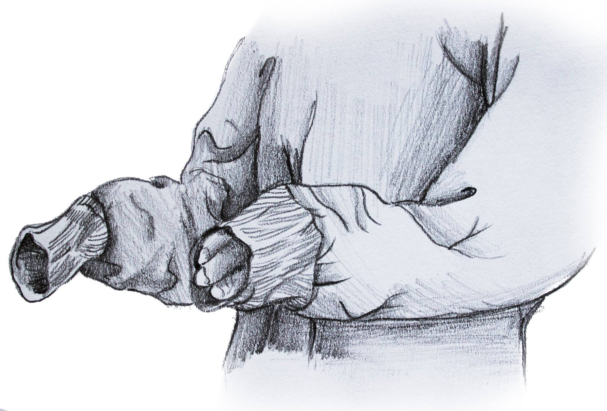
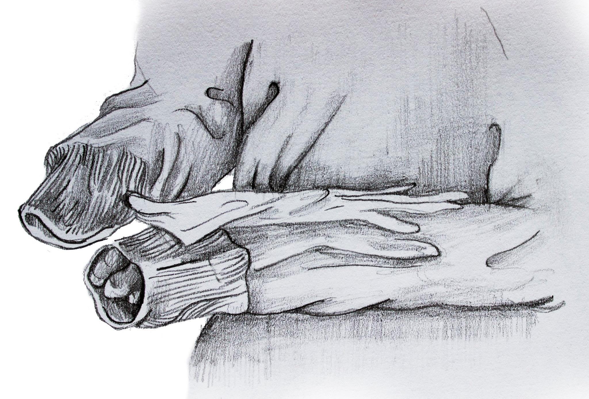
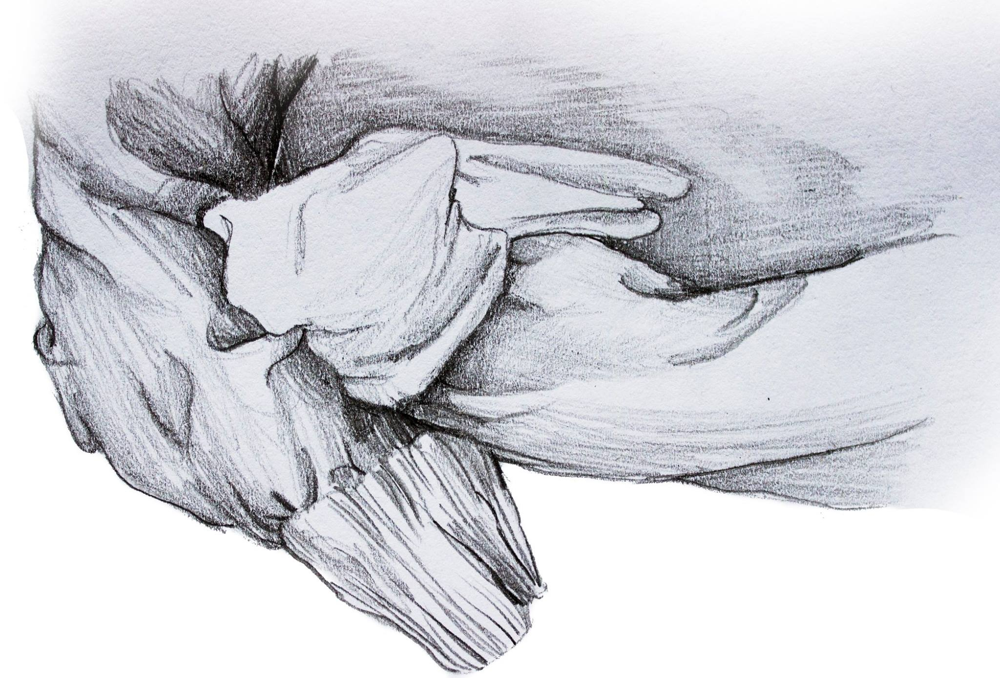
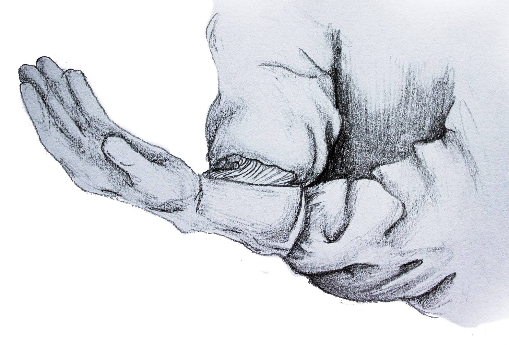
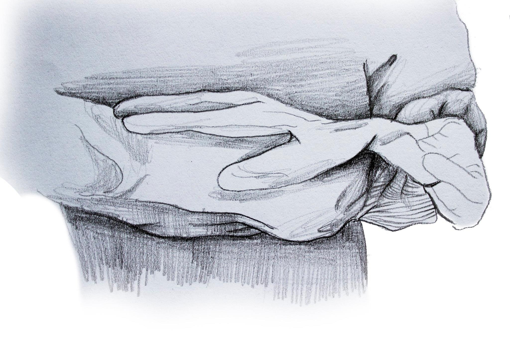
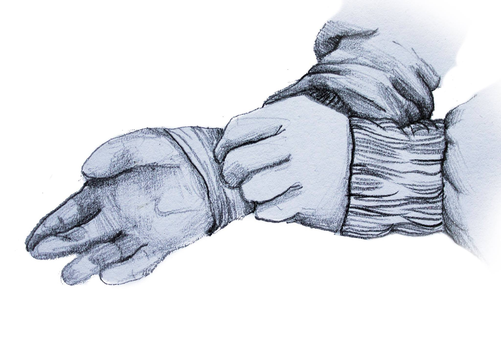
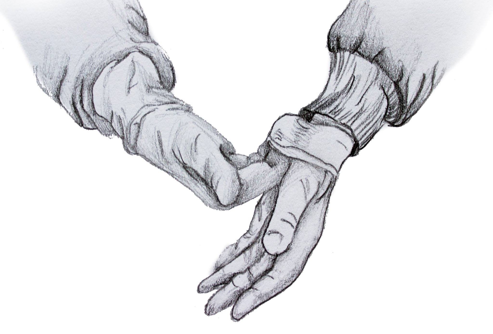
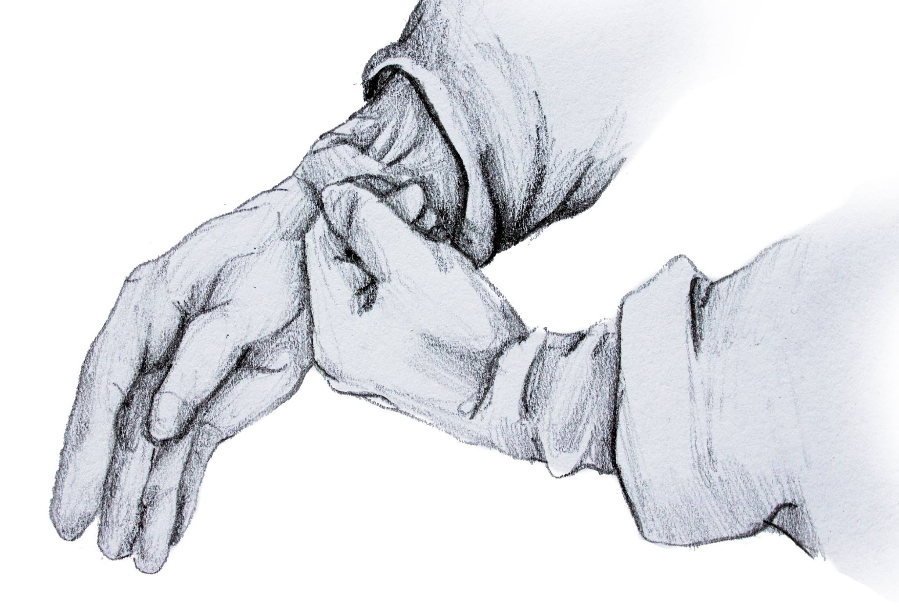

Zakładanie sterylnych rękawiczek
Rękawiczki chirurgiczne stanowią ochronę dla pacjenta, zabezpieczając go przed kontaktem z florą stałą i przejściową rąk personelu medycznego, oraz dla personelu medycznego zabezpieczając go przed zakażeniem od chorych. Są one jałowe, dlatego zakładać je można dopiero po odpowiednim myciu chirurgicznym. Aby osiągnąć odpowiedni cel skóra pracownika służby zdrowia musi mieć kontakt wyłącznie z WEWNĘTRZNĄ powierzchnią rękawicy i nie może mieć kontaktu z jej stroną zewnętrzną. Jakiekolwiek błędy w przeprowadzanych czynnościach powodują brak aseptyki i oznaczają konieczność zmiany rękawic.
Na sali operacyjnej w takcie przygotowań najpierw zakłada się jałowy fartuch. Jeżeli odbywa się to bez asysty, należy uważać aby dotykać wyłącznie jego wewnętrznej strony. Po włożeniu fartucha rękawiczki można założyć na dwa sposoby.
Sposób zamknięty
A – ręce wsuwa się do brzegów mankietów fartucha. NIE GŁĘBIEJ!
B – rękawiczkę należy umieścić powierzchnią dłoniową na przedramieniu palcami zwróconymi do łokcia.
C – za pomocą drugiej ręki przez materiał fartucha trzeba rozciągnąć rękawiczkę ponad ściągaczem nadgarstka.
D – rękawiczkę należy wciągnąć do tyłu na nadgarstek.
E – ręką w rękawiczce wciąga się rękawiczkę na drugą rękę w ten sam sposób.
Sposób otwarty
Stosuje się go kiedy ręce wsuwa się poza mankiety fartucha.
A – lewą ręką bez rękawiczki wciąga się rękawiczkę na prawą rękę, dotykając tylko wewnętrznej powierzchni.
B – palce prawej ręki w rękawiczce należy wsunąć pod jej odwrócony mankiet i założyć drugą rękawiczkę na lewą rękę.
C – mankiety rękawiczki wciąga się ponad ściągacze fartucha.
Zakładanie przez instrumentariuszkę
Najłatwiejszy i pod kontorlą doświadczonej osoby – najpierw podaje i rozciąga prawa rękawiczkę, wtedy my lewą dłonią naciągamy ja nieco od WEWNĄTRZ i zdecydowanym ruchem wkładamy prawą rękę do środka. Następnie ubieramy lewą rękawiczkę – jako że prawa ręka jest już w rękawiczce, to ubieramy ja naciągając lekko ZEWNĄTRZ i zdecydowanym ruchem wkładamy lewą rękę do środka. Palce mogą nie zmieścić się idealnie dlatego należy je poprawić, ale dopiero wtedy kiedy obie rękawiczki są już założone – NIE WCZEŚNIEJ!
Niektórzy lewą rękawiczkę zakładają w ten sam sposób co prawą – jest to BŁĄD - przesuwamy wówczas nieubraną rękę koło ubranej więc nie trudno o kontakt i skażenie rękawiczki.
Zawsze unikamy kontaktu z nieobłożoną skórą pacjenta,nawet umyta chirurgicznie – stosujemy często dodatkowe przescieradła żeby czasowo przykryć fragment skóry w obrębie którego w danej chwili nie operujemy, stosujemy folie przyklejane na skórę itp.
UWAGA!!!
Kiedy ręce są już w rękawiczkach mogą dotykać wyłącznie jałowych narzędzi i uprzednio zdezynfekowanych powierzchni ciała pacjenta w obrębie pola operacyjnego!